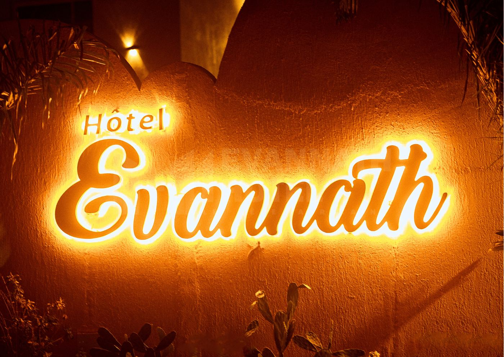

Kedjenou de poulet africain à la citronnelle
Poulet · citronnelle · attiéké
Étouffé lentement dans son propre jus, sans une goutte d'eau. Le plat que l'on commande deux fois.
12 000FCFA
Le capitaine arrive au petit matin. Le foutou se pile avant midi. Le soir, on allume les lanternes de rotin au-dessus de la lagune.
Une cuisine qui ne s'excuse pas d'être ivoirienne.
Le kedjenou mijote à la citronnelle, le poulet s'enrobe de kankankan sur le feu de bois, le poisson braisé se pose sur l'attiéké. À côté, un filet de bœuf prend un jus corsé au cacao, une souris d'agneau fond dans le miel. Ce ne sont pas deux cuisines qui cohabitent : c'est la même table.
Nous achetons court. Le poisson vient de la pêche bassamoise, le cacao de Daloa, le miel de Tafiré, les fleurs et le magnin sec d'Assinie même. Ce qui n'est pas d'ici, nous l'assumons — mais nous commençons toujours par regarder ce qui pousse à côté.

Les lanternes de rotin s'allument à la tombée du jour.
Si vous ne deviez goûter que cinq choses, voici lesquelles. Le reste de la carte est plus bas.
Étouffé lentement dans son propre jus, sans une goutte d'eau. Le plat que l'on commande deux fois.
Le poisson noble de la lagune, cuit dans sa vapeur. Il arrive fermé à table, il s'ouvre devant vous.
Le cacao ivoirien en sauce, amer et profond. Ni chocolat ni dessert : un jus de viande, simplement.
Sept heures de cuisson. La viande se détache à la cuillère, le miel du nord fait le reste.
Le grand plat de partage. Un seul plat, cinq assiettes, et personne ne parle pendant dix minutes.
Nos fournisseurs ont des noms de villes. C'est le meilleur résumé de notre cuisine.

On n'a pas besoin de dormir ici pour y dîner.
94 propositions. Rien n'est caché, rien n'est « sur demande ».
Aucun résultat. Essayez « poulet », « mojito » ou « chocolat ».